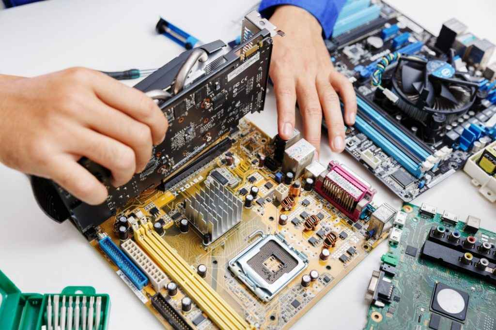

I learned a lot of physical troubleshooting and repair from my time at Royal High School as well as my time from BYUI at the IT support team here. They both have helped me in understanding and learning a lot about how computers work, how they break, and how to fix them.
I have learned a lot about customer support more from BYUI when i would speak to a lot more faculty, professors, and to students who would come in for help with their devices. I really have learned a lot about how to speak to customers and how to describe and help them understand how things work and how to fix as much as they can.
 My time at BYUI has allowed me to have the most leadership as it has allowed me to find leadership roles as well as opportunities to train new hires. I have the opportunity to be in charge of shifts of when people come in and in distributing tickets, being an advisor they can call if they need help on tickets, or in managing important projects we are in charge of.
My time at BYUI has allowed me to have the most leadership as it has allowed me to find leadership roles as well as opportunities to train new hires. I have the opportunity to be in charge of shifts of when people come in and in distributing tickets, being an advisor they can call if they need help on tickets, or in managing important projects we are in charge of.